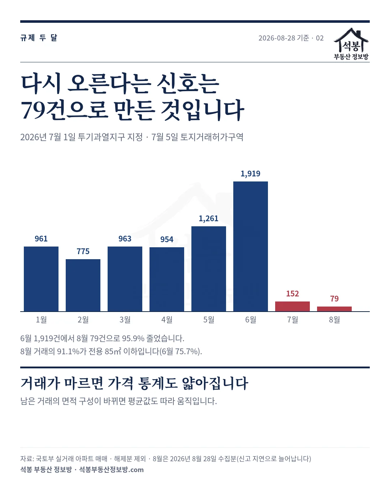
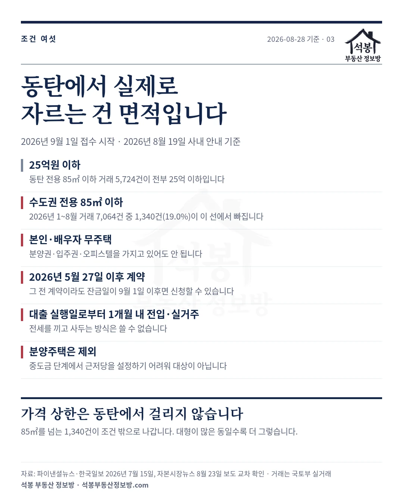
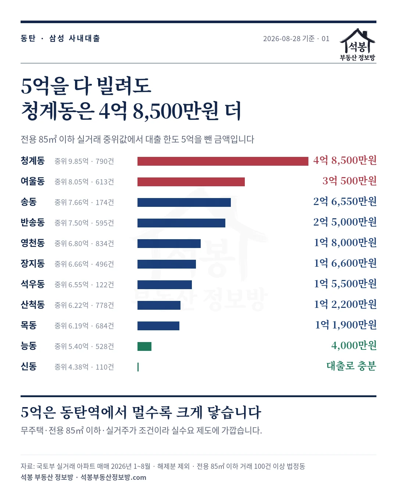
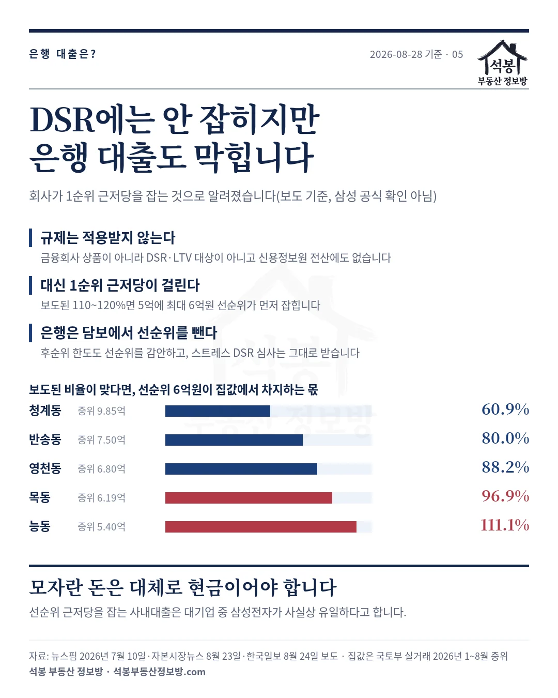
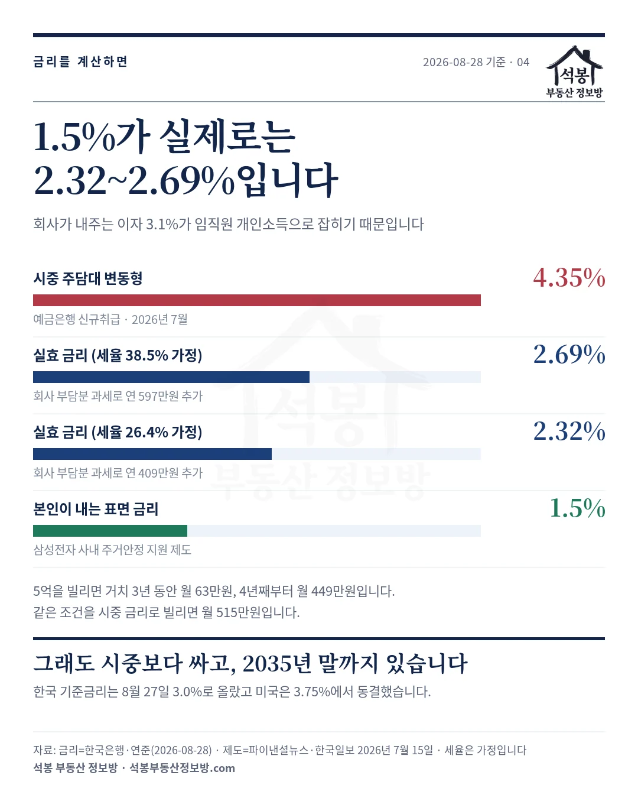

2026년 9월 1일부터 삼성전자가 무주택 임직원에게 집을 살 때 최대 5억원을 연 1.5%로 빌려줍니다. 동탄이 다시 움직일 거라는 이야기가 나옵니다. 그런데 이 제도의 조건을 동탄 실거래에 그대로 대보면, 5억이 가장 크게 닿는 곳은 동탄역이 아니었습니다. 청계동은 5억을 다 빌리고도 4억 8,500만원이 더 필요하고, 능동은 4,000만원이면 됩니다. 그리고 그 모자란 돈은 은행에서 채우기 어렵습니다. 회사가 1순위 근저당을 잡는 것으로 알려져 있기 때문입니다. 아래 숫자는 국토부 실거래 원자료와 관련 보도 다섯 건의 전문을 직접 대조해 계산한 것입니다.
하나. 규제 두 달, 거래는 96% 줄었습니다
국토교통부는 2026년 6월 30일 발표로 화성시 동탄구를 7월 1일부터 투기과열지구·조정대상지역, 7월 5일부터 토지거래허가구역으로 묶었습니다. 그 뒤 두 달을 우리 실거래로 세어 보면 이렇습니다.
| 계약월 | 매매 거래 | 전용 85㎡(25.7평) 이하 비중 | 중위 평당가(전용) |
|---|---|---|---|
| 2026년 5월 | 1,261건 | 75.5% | 3,106만원 |
| 2026년 6월 | 1,919건 | 75.7% | 2,972만원 |
| 2026년 7월 | 152건 | 75.0% | 3,053만원 |
| 2026년 8월 | 79건 | 91.1% | 3,223만원 |
6월 1,919건이 8월 79건이 됐습니다. 95.9% 감소입니다.
그런데 같은 기간 주간 아파트 가격 통계는 상승폭이 다시 커졌다고 나옵니다. 둘이 모순은 아닙니다. 다만 8월의 상승률은 79건으로 만든 숫자라는 점은 알고 보셔야 합니다.
표의 세 번째 칸을 보시면 이유가 보입니다. 6월에는 거래의 75.7%가 전용 85㎡(25.7평) 이하였는데 8월에는 91.1%였습니다. 거래가 마르면서 남은 거래의 면적 구성 자체가 바뀐 것입니다.
같은 동네라도 소형이 평당가가 높으니, 소형 비중이 늘면 평당 지표는 실제 가격이 안 움직여도 올라갑니다. 지금 동탄의 가격 숫자는 그런 상태에서 나온 값입니다.

가입하시면 지역 시장조사 보고서(약식)를 2회 무료로 요청하실 수 있습니다.
둘. 조건 여섯 개 중 동탄에서 실제로 자르는 건 면적입니다
제도 내용부터 정리하겠습니다. 매매는 최대 5억원, 임차는 최대 3억원이고 본인이 내는 금리는 연 1.5%, 회사가 3.1%를 부담합니다.
3년 동안 이자만 내고 이후 10년에 걸쳐 원리금을 균등 상환하며 매달 급여에서 빠져나갑니다. 접수는 2026년 9월 1일에 시작하고 시행 기간은 2035년 말까지입니다. 대출 횟수에는 제한을 두지 않았습니다.
여기서 한 가지 말씀드릴 것이 있습니다. 삼성전자가 이 제도를 따로 배포한 보도자료는 없습니다. 사내 공지로 나간 내용을 언론이 받아 쓴 것이라, 저희도 기사 세 곳의 전문을 대조해 확인했습니다.
공식 자료로 확인되는 것은 2026년 5월 27일 임금협약 체결 사실뿐입니다. 제도는 그 협약에서 나왔고, 세부 조건은 7월 15일 사내 안내로 정해졌습니다.
순서를 정리하면 이렇습니다. 5월 20일 잠정 합의에 최대 5억원 주택자금 대출 신설이 담겼고, 5월 27일 협약이 체결됐으며, 7월 15일 시행 세부가 공지됐고, 9월 1일 접수가 시작됩니다. 기준이 되는 날짜는 협약 체결일인 5월 27일입니다.
주요 조건은 다섯 개입니다.
| 조건 | 동탄에 대보면 |
|---|---|
| 25억원 이하 주택·오피스텔 | 동탄에서는 걸리지 않습니다. 전용 85㎡ 이하 거래 5,724건이 전부 25억원 아래입니다 |
| 수도권은 전용 85㎡(25.7평) 이하 | 2026년 1~8월 거래 7,064건 중 1,340건(19.0%)이 여기서 빠집니다 |
| 본인과 배우자 모두 무주택 | 분양권·입주권·오피스텔을 갖고 있어도 안 됩니다 |
| 2026년 5월 27일 이후 계약분 | 노사 협약 체결일 기준입니다. 다만 그 이전 계약이라도 잔금일이 9월 1일 이후면 신청할 수 있습니다 |
| 대출 실행일부터 1개월 내 전입 | 실거주 조건입니다. 전세를 끼고 사두는 방식은 쓸 수 없습니다 |
표에 없는 조건이 하나 더 있습니다. 분양주택은 대상이 아닙니다. 중도금 단계에서는 근저당권을 설정하기 어렵기 때문입니다.
청약에 당첨돼 계약금을 넣은 분은 이 대출을 쓸 수 없다는 뜻입니다. 근저당 이야기가 왜 나오는지는 네 번째 절에서 말씀드리겠습니다.
흔히 25억원 상한이 조건으로 소개되는데, 동탄에서 그 선에 걸리는 거래는 한 건도 없습니다. 가격 요건은 서울 상급지를 겨냥한 장치이고, 동탄에서 실제로 사람을 걸러내는 것은 전용 85㎡(25.7평)라는 면적선입니다. 2026년 1월부터 8월까지 동탄 아파트 매매 7,064건 가운데 1,340건, 다섯 중 하나가 이 선 밖으로 나갑니다.
남은 세 조건은 방향이 분명합니다. 무주택, 협약 이후 계약, 한 달 안에 전입. 이 제도는 투자용으로 설계되지 않았습니다. 갭투자를 막고 실거주만 남기는 구조입니다.
그래서 이 5억원이 시장에 미치는 영향을 볼 때도 "돈이 풀린다"보다 "무주택 실수요자가 살 수 있는 가격대가 어디까지 올라갔나"를 보는 편이 정확합니다.

셋. 그래서 5억이 닿는 곳은 동탄역이 아닙니다
계산은 단순합니다. 동탄 각 법정동에서 전용 85㎡ 이하 실거래의 중위값을 구하고, 거기서 대출 한도 5억원을 뺐습니다. 남는 금액이 본인이 따로 마련해야 하는 돈입니다. 2026년 1월부터 8월까지 거래가 100건 넘는 동만 담았습니다.
| 법정동 | 전용 85㎡ 이하 중위 | 5억을 빌린 뒤 | 평당가(전용) | 거래 |
|---|---|---|---|---|
| 청계동 | 9억 8,500만원 | 4억 8,500만원 더 | 4,288만원 | 790건 |
| 여울동 | 8억 500만원 | 3억 500만원 더 | 3,631만원 | 613건 |
| 송동 | 7억 6,550만원 | 2억 6,550만원 더 | 3,839만원 | 174건 |
| 반송동 | 7억 5,000만원 | 2억 5,000만원 더 | 3,090만원 | 595건 |
| 영천동 | 6억 8,000만원 | 1억 8,000만원 더 | 3,120만원 | 834건 |
| 장지동 | 6억 6,600만원 | 1억 6,600만원 더 | 3,058만원 | 496건 |
| 석우동 | 6억 5,500만원 | 1억 5,500만원 더 | 3,052만원 | 122건 |
| 산척동 | 6억 2,200만원 | 1억 2,200만원 더 | 2,894만원 | 778건 |
| 목동 | 6억 1,900만원 | 1억 1,900만원 더 | 2,734만원 | 684건 |
| 능동 | 5억 4,000만원 | 4,000만원 더 | 2,408만원 | 528건 |
| 신동 | 4억 3,750만원 | 대출로 충분 | 2,604만원 | 110건 |
순서가 그대로 동탄역과의 거리입니다. GTX-A와 SRT가 서는 동탄역을 낀 청계동·여울동이 위에 있고, 동탄1신도시와 호수공원 쪽 능동·목동·산척동이 아래에 있습니다. 5억원은 동탄역에서 멀어질수록 크게 닿습니다.
이건 제도가 잘못됐다는 뜻이 아니라, 기대의 방향을 바꿔야 한다는 뜻입니다. 사내대출을 받는 무주택 임직원이 이 돈으로 청계동 신축을 사기는 어렵습니다. 5억을 빌려도 4억 8,500만원을 더 만들어야 하고, 그만한 자기자본이 있는 사람은 이미 무주택자가 아닐 가능성이 큽니다.
반대로 능동·목동·산척동처럼 5~6억대 구간에서는 이 대출이 실제로 매수를 성사시킬 수 있습니다. 9월 이후 거래가 살아난다면 그쪽이 먼저일 가능성이 높습니다.

넷. 모자란 돈을 은행에서 빌릴 수 있을까요
여기서 당연한 질문이 나옵니다. 청계동에서 4억 8,500만원이 더 필요하다면, 그건 은행에서 빌리면 되지 않나요? 사내대출은 은행 대출이 아니니 DSR에도 안 잡힐 텐데요.
앞부분은 맞습니다. 사내대출은 금융회사가 파는 상품이 아니라 DSR과 LTV 규제를 직접 적용받지 않습니다. 신용정보원 전산에도 올라가지 않아 은행이 심사에서 알아내기 어렵습니다. 그래서 "5억은 회사에서, 나머지는 은행에서"라는 기대가 돌았습니다.
그런데 실제 구조는 반대라고 알려져 있습니다. 삼성전자가 대출을 실행하면서 그 집에 1순위 근저당권을 설정한다는 것입니다. 5억원을 빌리면 회사가 담보를 먼저 잡아 두는 셈입니다.
다만 여기서 확인 수준을 정확히 말씀드리겠습니다. 근저당 설정은 삼성전자가 공식적으로 밝힌 내용이 아니라 보도로 알려진 것입니다.
7월 10일 뉴스핌은 "선순위 근저당권을 설정하기로 했다"며 대출금의 110~120% 수준이라는 수치까지 전했지만, 그 수치는 "추진된다"는 표현이었습니다. 8월 24일 한국일보는 "설정하는 것으로 알려져"라고 조심스럽게 적었습니다.
설정한다는 사실은 여러 매체가 일치하지만, 비율까지 확정된 것으로 보기는 어렵습니다.
보도된 110~120%가 맞다고 보면 어떻게 되는지, 동탄에 대봤습니다. 은행은 추가 대출 한도를 정할 때 담보가치에서 선순위 채권을 빼기 때문입니다.
| 법정동 | 전용 85㎡ 이하 중위 | 선순위 근저당(최대) | 집값 대비 |
|---|---|---|---|
| 청계동 | 9억 8,500만원 | 6억원 | 60.9% |
| 반송동 | 7억 5,000만원 | 6억원 | 80.0% |
| 영천동 | 6억 8,000만원 | 6억원 | 88.2% |
| 목동 | 6억 1,900만원 | 6억원 | 96.9% |
| 능동 | 5억 4,000만원 | 6억원 | 111.1% |
규제지역이라 담보인정비율이 이미 낮은데, 그 위에 집값의 60.9%에서 111.1%에 이르는 선순위 채권이 얹힙니다. 남는 담보 여력이 사실상 없어집니다.
후순위로 빌리려 해도 선순위 채권을 감안해 한도가 정해지고, 스트레스 DSR과 상환능력 심사는 그대로 받습니다. 정리하면 사내대출 5억원과 은행 주택담보대출을 함께 쓰기는 어렵다는 쪽입니다.
그러니 앞 표의 "5억을 빌린 뒤" 칸을 다시 보셔야 합니다. 그 금액은 은행에서 채우기 어렵고 대체로 직접 마련해야 하는 돈으로 보셔야 합니다. 청계동 4억 8,500만원, 여울동 3억 500만원이 그런 성격입니다.
순서를 보면 왜 이렇게 됐는지 짐작이 갑니다. 5월 노사 합의 때는 25억원 상한도 전용 85㎡(25.7평) 제한도 없었습니다. 집값을 자극한다는 지적이 나왔고, 금융당국이 7월 9일 가계부채 점검회의에서 대기업 사내대출을 들여다보겠다고 한 뒤 7월 15일 안내에 두 조건이 붙었습니다.
근저당도 같은 흐름에서 나왔습니다. 뉴스핌은 삼성전자가 당국의 우려와 형평성 논란을 고려해 선순위 근저당을 설정하기로 했다고 전했습니다.
이걸 두고 평가는 갈립니다. 회사가 스스로 레버리지를 차단한 자체 규제로 보는 시각이 있고, 법적 규제 대상도 아닌 기업 복지에 당국이 사실상 표준을 강제했다는 반론도 있습니다. 어느 쪽이든 선순위 근저당까지 잡는 사내대출은 대기업 가운데 삼성전자가 사실상 유일하다고 알려져 있습니다.

다섯. 조건에 맞춰 고른 단지들
전용 85㎡(25.7평) 이하 거래가 2026년 1월부터 8월까지 30건 넘는 단지 가운데, 자기자본 부담이 갈리는 세 구간에서 뽑았습니다. 금액은 그 단지 전용 85㎡ 이하 거래의 중위값입니다.
| 단지 | 위치 | 중위 | 5억을 빌린 뒤 | 준공 |
|---|---|---|---|---|
| 대출만으로 거의 되는 구간 | ||||
| 그린힐 반도유보라 아이비파크 10(1단지) | 산척동 | 4억 4,500만원 | 대출로 충분 | 2018년 |
| 동탄2 디에트르 포레 | 신동 | 4억 3,750만원 | 대출로 충분 | 2022년 |
| 자연앤데시앙 | 능동 | 5억 3,000만원 | 3,000만원 더 | 2008년 |
| 동탄호수자이파밀리에 | 장지동 | 5억 9,950만원 | 9,950만원 더 | 2018년 |
| 1억~4억을 더 마련해야 하는 구간 | ||||
| 동탄역포레너스 | 영천동 | 6억 7,500만원 | 1억 7,500만원 더 | 2017년 |
| 동탄시범다은마을 월드메르디앙 반도유보라 | 반송동 | 7억 8,800만원 | 2억 8,800만원 더 | 2007년 |
| 동탄2 하우스디 더 레이크 | 송동 | 7억 8,700만원 | 2억 8,700만원 더 | 2016년 |
| 동탄역센트럴푸르지오 | 청계동 | 8억 5,800만원 | 3억 5,800만원 더 | 2015년 |
| 6억 이상을 더 마련해야 하는 구간 | ||||
| 동탄역시범호반써밋 | 청계동 | 11억 3,450만원 | 6억 3,450만원 더 | 2015년 |
| 동탄역 반도유보라 아이비파크 7.0 | 여울동 | 11억 8,000만원 | 6억 8,000만원 더 | 2019년 |
| 동탄역 시범우남퍼스트빌 | 청계동 | 12억 5,300만원 | 7억 5,300만원 더 | 2015년 |
| 동탄역 시범한화 꿈에그린 프레스티지 | 청계동 | 14억 3,000만원 | 9억 3,000만원 더 | 2015년 |
맨 위 두 단지는 전용 59㎡(17.8평)와 56㎡(16.9평)가 거래 중심이라 금액이 낮습니다. 가족 구성에 따라 면적이 안 맞을 수 있으니, 금액만 보고 고르실 일은 아닙니다. 반대로 아래 네 단지는 동탄역 도보권의 시범단지들인데, 전용 85㎡(25.7평) 이하인데도 11억원을 넘습니다. 조건은 통과하지만 자금이 안 닿는 경우입니다.
표의 단지명을 누르시면 저희 지도로 이어지는데, 지도에 뜨는 중위값은 위 표와 다릅니다. 지도는 최근 6개월 거래를 쓰고 표는 2026년 1월부터 8월까지를 쓰기 때문입니다.
그 차이가 첫 번째 절에서 말씀드린 문제를 그대로 보여줍니다. 동탄역 시범우남퍼스트빌은 여덟 달 87건으로 계산하면 12억 5,300만원인데, 최근 석 달 8건만으로 계산하면 16억 7,500만원입니다. 4억 넘게 벌어집니다.
어느 쪽이 틀린 게 아니라, 거래가 여덟 건뿐인 구간의 중위값은 그만큼 흔들린다는 뜻입니다. 지금 동탄의 가격 숫자를 보실 때는 금액 옆에 건수를 꼭 같이 보셔야 합니다.
여섯. 1.5%는 실제로 2.3~2.7%입니다
금리도 그대로 받아들이면 안 됩니다. 회사가 부담하는 연 3.1%는 임직원 개인소득으로 잡힙니다. 5억원을 빌리면 회사 부담 이자가 연 1,550만원인데, 이 금액이 소득에 얹히면서 세금이 늘어납니다.
지방소득세를 포함한 실효세율을 26.4%로 보면 연 409만원, 38.5%로 보면 연 597만원이 더 나갑니다. 이자와 세금을 합쳐 금리로 환산하면 연 2.32~2.69%가 됩니다. 세율은 개인마다 다르니 어디까지나 가늠입니다.
| 구분 | 연 이율 | 비고 |
|---|---|---|
| 시중 주담대 변동형 | 4.35% | 예금은행 신규취급 · 2026년 7월 |
| 실효 금리 (세율 38.5% 가정) | 2.69% | 회사 부담분 과세로 연 597만원 추가 |
| 실효 금리 (세율 26.4% 가정) | 2.32% | 회사 부담분 과세로 연 409만원 추가 |
| 본인이 내는 표면 금리 | 1.50% | 삼성전자 사내 주거안정 지원 제도 |
그래도 시중보다 훨씬 쌉니다. 5억원을 빌리면 거치 3년 동안은 월 63만원만 내면 되고, 4년째부터 월 449만원씩 10년입니다. 같은 조건을 시중 금리로 빌리면 월 515만원이니 상환기에도 매달 66만원 차이가 납니다.
다만 4년째에 월 449만원이 시작된다는 점은 자금 계획에서 빼놓을 수 없습니다. 거치 기간의 여유가 그대로 유지되는 것처럼 계산하면 나중에 어려워집니다.
금리 환경도 순풍은 아닙니다. 한국은행 기준금리는 2026년 8월 27일 3.0%로 0.25%p 올랐고, 미국 연준은 3.75%(목표범위 상단)에서 동결했습니다. 한미 정책금리차는 0.75%p입니다.
장기물을 보면 한국 국고채 10년물이 4.238%(2026년 8월 27일 기준, 전일 대비 0.05%p 하락), 미국 국채 10년물이 4.66%(8월 26일 기준, 0.02%p 상승)로 둘 다 높은 구간에 있습니다. 시중 주담대가 당분간 크게 내려올 환경이 아니라는 뜻이고, 그만큼 사내대출의 값어치가 큽니다.

이 제도는 2035년 말까지 있습니다
마지막이 어쩌면 가장 중요합니다. 시행 기간이 2035년 말까지입니다. 9월 1일에 접수가 열린다고 해서 9월에 사야 하는 제도가 아닙니다.
자격은 무주택인 동안 유지되고, 조건에 맞는 집을 찾을 시간은 남아 있습니다. 지금 동탄은 토지거래허가구역이라 매수 절차 자체가 전보다 무겁고, 8월 거래는 79건뿐입니다. 급하게 움직여서 좋을 국면은 아닙니다.
동탄이 다시 오를지는 이 5억원이 아니라 거래량이 돌아오는지로 보시는 편이 낫습니다.
9월과 10월 계약분이 세 자릿수 후반으로 회복되면 그때는 수요가 실제로 움직인 것이고, 지금처럼 두 자릿수에 머문다면 가격 지표가 오르내려도 표본이 얇아 생긴 흔들림일 수 있습니다. 저희는 매달 이 숫자를 다시 세어 알려드리겠습니다.
원자료: 국토부 실거래 아파트 매매(화성 동탄권 11개 법정동, 계약월 2026년 1~8월 7,064건, 해제분 제외, 2026년 8월 28일 수집분). 8월 79건은 신고 지연으로 앞으로 늘어납니다. 금액은 전용면적 기준 중위값이고 평당가도 전용 기준입니다
제도는 삼성전자 보도자료가 없어(사내 공지) 뉴스핌 7월 10일, 파이낸셜뉴스·한국일보 7월 15일, 자본시장뉴스 8월 23일, 한국일보 8월 24일 전문을 교차 확인했습니다. 근저당은 공식 확인이 아니라 보도로 알려진 것이고 110~120%는 뉴스핌·자본시장뉴스 기준입니다. 잠정합의는 서울신문 5월 22일, 당국 회의는 파이낸셜투데이 7월 10일. 공식 자료는 뉴스룸의 5월 27일 임금협약 체결 발표까지이며 규제지역 지정은 국토교통부 6월 30일 보도참고
실효 금리의 세율(26.4%·38.5%)은 저희 가정이며 개인 소득에 따라 달라집니다. 시중 금리는 예금은행 신규취급 변동형(2026년 7월), 기준금리는 8월 27일 기준
편집·제작: 석봉 부동산 정보방 · 투자 권유가 아닙니다.